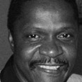

The Accused
| Larry Mayes | ||
|  |
Incident Date: 10/5/80 Jurisdiction: IN Charge: Robbery, Unlawful Deviate Conduct Conviction: Robbery, Unlawful Deviate Conduct Sentence: 80years |
Year of Conviction: 1982 Exoneration Date: 12/20/01 Sentence Served: 18.5 Years Real perpetrator found? Not Yet Contributing Causes: Eyewitness Misidenfication Compensation? Yes |
In December 2001, Larry Mayes was freed from prison after twenty-one years of incarceration for a rape and robbery he did not commit. Mayes was the 100th person in the United States exonerated through the use of postconviction DNA testing.
In October 1980, the victim, a white woman, was working as a gas station clerk in Hammond, Indiana. Two black males entered the station, accosted her with a gun, and demanded money. One of the assailants was noticeably taller and heavier than the other. The victim was forced to leave the station with the men. She was attacked with the butt of the gun and then raped both orally and vaginally.
At trial, the prosecution relied on unvalidated forensic evidence and the testimony of two jailhouse snitches. An FBI hair analyst testified that Fain’s hairs and the hairs from the crime scene were similar and shared an uncommon trait.